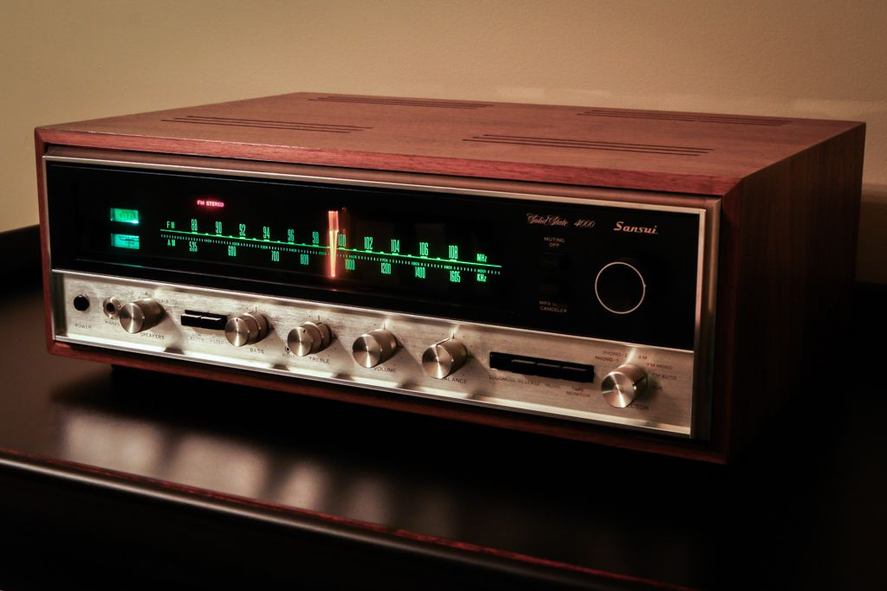
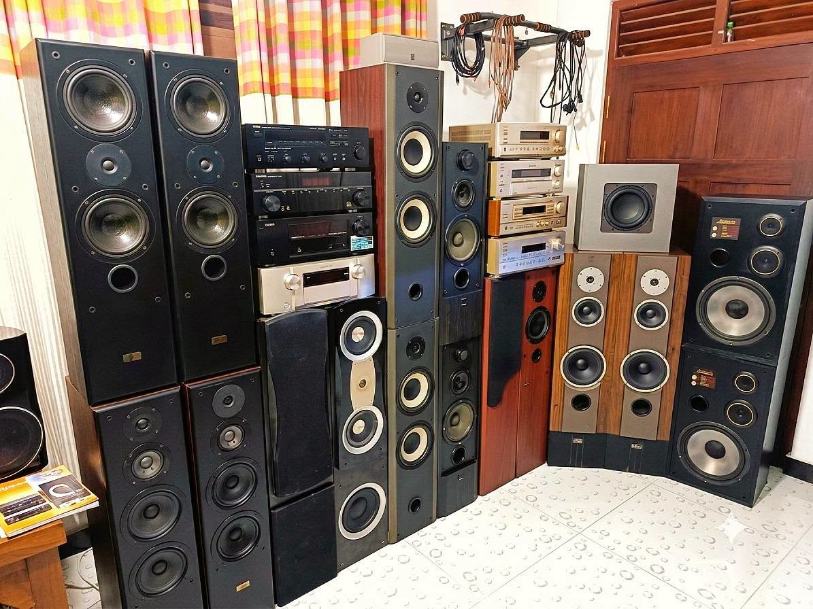
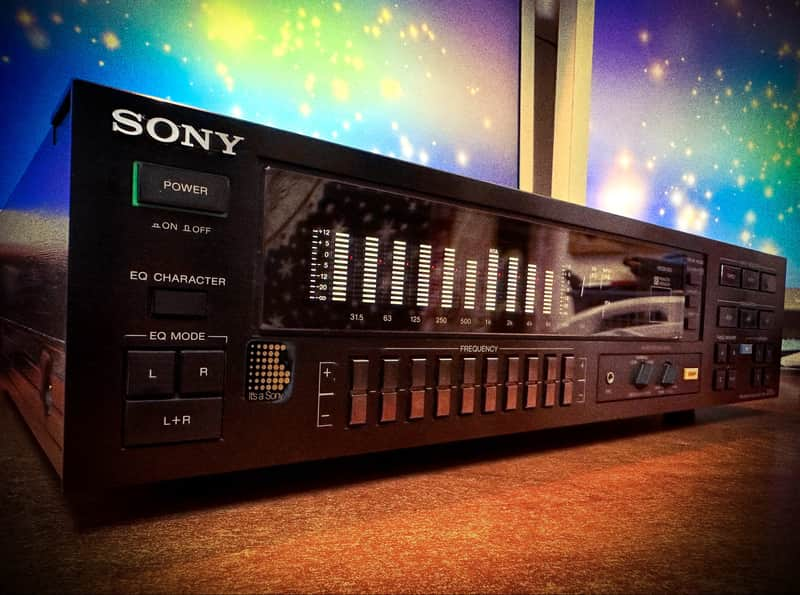
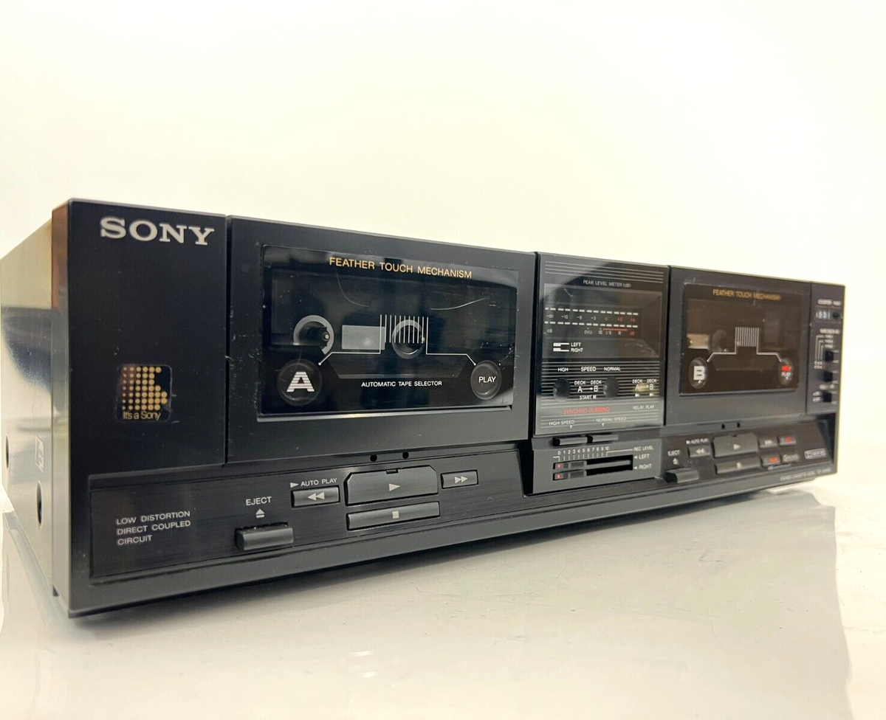
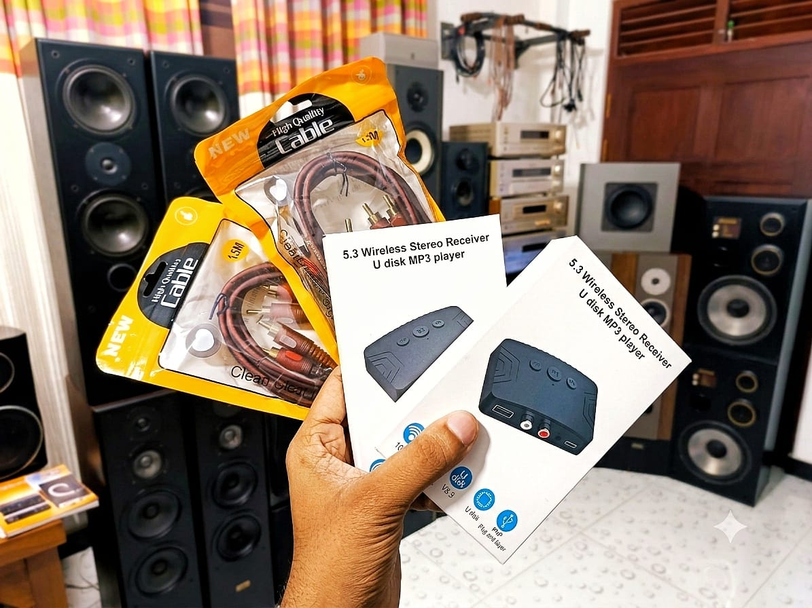
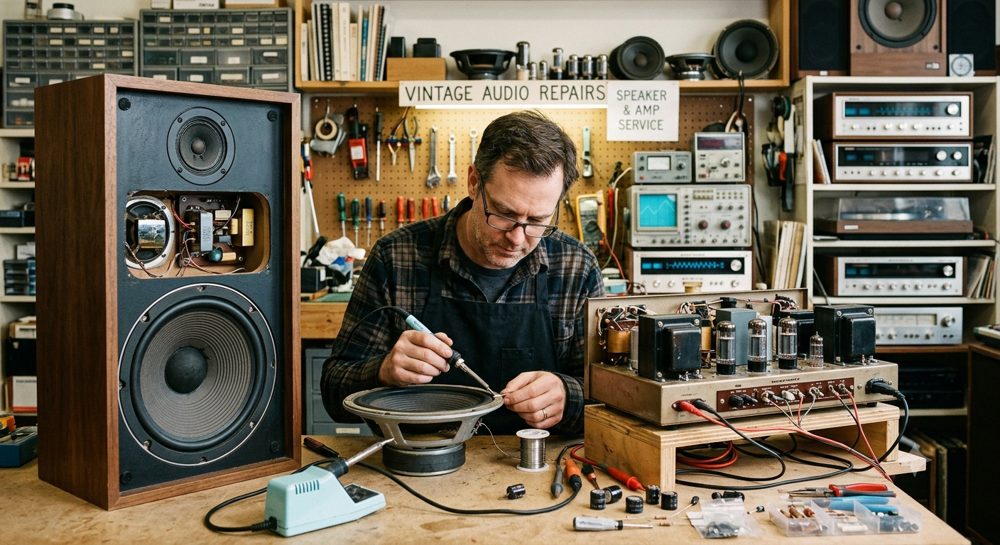

We are trusted importers & dealers in vintage audio equipments
Weerasinghe Sounds is a trusted Sri Lankan supplier of quality vintage audio equipment. We specialize in carefully selected imported audio systems, bringing legendary sound performance and timeless engineering to music enthusiasts. Our collection includes amplifiers, speakers, cassette decks, tuners, equalizers, and players from some of the world's most respected audio brands.

Stereo Amplifiers
Prologic Amplifiers
Class D Amplifiers
AVRs

Floor-Standing Speakers
Tower Speakers
Bookshelf Speakers
Monitor Speakers
Subwoofers

All 4-10 Band Equalizers
Graphic Equalizers

Single Cassette Decks
Double Cassette Decks
Vintage Decks

Bluetooth Receivers
Speaker Connectors
Cables

Amplifiers/AVRs Repair
Speakers Repair
Cables
📍 Parakumba Place, Athurugiriya Road, Malabe
📞 078 833 2735 | 078 128 0631
✉️ weerasinghegroup.info@gmail.com